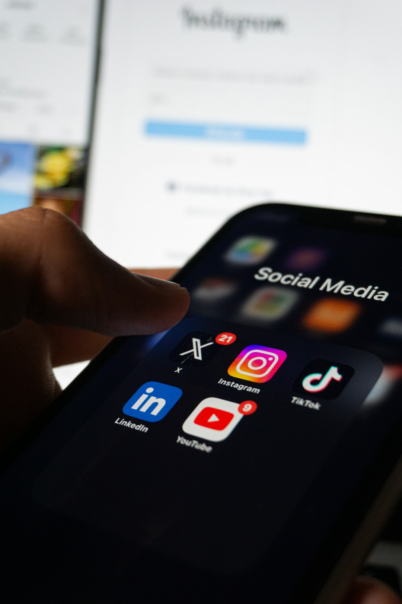

Tâm Lý Ảnh Hưởng: Giải Mã Sức Mạnh Mạng Xã Hội Lên Bạn

Sức Hút Khó Cưỡng của Mạng Xã Hội: Tại Sao Chúng Ta Bị Cuốn Hút?
Để hiểu về tâm lý ảnh hưởng, trước tiên, chúng ta cần nhận ra bản chất của sự hấp dẫn từ mạng xã hội. Giống như một nhà khoa học giải phẫu, chúng ta sẽ mổ xẻ những yếu tố khiến chúng ta không thể rời mắt khỏi màn hình.
Nhu Cầu Kết Nối và Thuộc Về
Con người là sinh vật xã hội. Nhu cầu được kết nối, được chấp nhận và thuộc về một nhóm là bản năng sâu xa, có từ hàng triệu năm tiến hóa. Mạng xã hội cung cấp một môi trường 'ảo' để chúng ta thỏa mãn nhu cầu này một cách nhanh chóng và dễ dàng. Một lượt thích, một bình luận, một tin nhắn từ bạn bè – tất cả đều kích hoạt trung tâm khen thưởng trong não bộ, giải phóng dopamine, mang lại cảm giác dễ chịu và được công nhận.
Phần Thưởng Đa-pô-min Tức Thì và Tính Bất Định
Hãy tưởng tượng bạn đang chơi máy đánh bạc. Mỗi lần kéo cần, bạn không biết mình sẽ nhận được gì. Chính sự bất định này làm tăng cường ham muốn chơi. Tương tự, khi chúng ta lướt News Feed, chúng ta không bao giờ biết mình sẽ thấy gì tiếp theo: một bức ảnh đẹp, một tin tức giật gân, hay một video hài hước. Sự chờ đợi phần thưởng không xác định này chính là cơ chế mạnh mẽ kích thích giải phóng dopamine, tạo ra một vòng lặp gây nghiện, giữ chúng ta mãi mãi ở lại trên các nền tảng mạng xã hội.
Những Hiệu Ứng Ngầm của Tâm Lý Ảnh Hưởng trên Mạng Xã Hội
Giờ đây, khi đã hiểu tại sao chúng ta bị thu hút, hãy cùng khám phá sâu hơn về cách mạng xã hội thực sự tác động đến tâm trí chúng ta qua các hiệu ứng tâm lý tinh vi.
Hiệu Ứng So Sánh Xã Hội: Luôn Thấy Mình Thiếu Sót
Một trong những hiệu ứng mạnh mẽ nhất là lý thuyết so sánh xã hội. Trên mạng xã hội, chúng ta liên tục tiếp xúc với những hình ảnh được chọn lọc, chỉnh sửa cẩn thận về cuộc sống 'hoàn hảo' của người khác: những chuyến du lịch sang chảnh, những bữa ăn thịnh soạn, những mối quan hệ lãng mạn. Điều này dễ dàng dẫn đến việc chúng ta tự so sánh bản thân với 'phiên bản tốt nhất' của người khác, và thường xuyên cảm thấy mình thiếu sót, không đủ tốt, hoặc bỏ lỡ điều gì đó. Điều này có thể gây ra lo âu, trầm cảm và giảm tự trọng. Tìm hiểu thêm về lý thuyết này trên Wikipedia.
FOMO (Nỗi Sợ Bỏ Lỡ): Kẻ Đánh Cắp Sự An Yên
Chắc hẳn bạn đã từng trải qua cảm giác bứt rứt khi thấy bạn bè đang đi chơi mà mình lại ở nhà? Đó chính là FOMO (Fear Of Missing Out) – nỗi sợ hãi bị bỏ lỡ. Mạng xã hội khuếch đại FOMO bằng cách liên tục hiển thị cho chúng ta những hoạt động, sự kiện mà chúng ta không tham gia, tạo áp lực phải luôn 'trực tuyến' và cập nhật để không bị tách rời. Điều này không chỉ gây ra căng thẳng mà còn khiến chúng ta khó lòng tận hưởng khoảnh khắc hiện tại.
Hiệu Ứng Thao Túng Tâm Lý Tập Thể (Groupthink & Echo Chambers)
Các thuật toán của mạng xã hội có xu hướng hiển thị cho chúng ta nội dung mà chúng ta đã tương tác trước đó, hoặc nội dung mà bạn bè của chúng ta tương tác. Điều này tạo ra các 'buồng vọng' (echo chambers), nơi chúng ta chỉ tiếp xúc với những ý kiến, quan điểm giống mình. Trong những 'buồng vọng' này, hiện tượng tư duy nhóm (groupthink) dễ dàng xảy ra, khi cá nhân có xu hướng chấp nhận quan điểm của số đông để duy trì sự hòa hợp, thay vì tư duy phản biện. Điều này có thể làm méo mó nhận thức về thực tế và làm tăng sự phân cực trong xã hội.
Thiên Vị Xác Nhận: Chỉ Nghe Điều Mình Muốn Nghe
Cùng với các 'buồng vọng', thiên vị xác nhận (confirmation bias) cũng là một yếu tố mạnh mẽ. Chúng ta có xu hướng tìm kiếm, diễn giải và ghi nhớ thông tin theo cách xác nhận niềm tin đã có của mình. Trên mạng xã hội, điều này càng được củng cố khi các thuật toán ưu tiên hiển thị những nội dung phù hợp với xu hướng tìm kiếm và tương tác trước đó của bạn, khiến bạn tin rằng quan điểm của mình là phổ biến hoặc đúng đắn hơn thực tế.
Nắm Vững Tâm Lý Ảnh Hưởng: Biến Mạng Xã Hội Thành Đồng Minh
Sau khi giải mã các hiệu ứng ngầm, câu hỏi đặt ra là: Làm thế nào để chúng ta không bị động trước sức mạnh của mạng xã hội mà ngược lại, biến nó thành công cụ hữu ích cho mình? Chìa khóa nằm ở việc hiểu rõ tâm lý ảnh hưởng và thực hành sự chủ động.
Thực Hành Chánh Niệm Kỹ Thuật Số
Hãy ý thức hơn về cách bạn sử dụng mạng xã hội. Trước khi lướt, hãy tự hỏi: 'Mình đang tìm kiếm điều gì?', 'Mình cảm thấy thế nào sau khi xem xong?'. Đặt ra giới hạn thời gian sử dụng, tắt thông báo không cần thiết và tạo ra các khoảng thời gian 'không công nghệ' trong ngày. Chánh niệm kỹ thuật số giúp bạn lấy lại quyền kiểm soát thời gian và sự chú ý của mình.
Kiểm Soát Thông Tin Đầu Vào
Bạn là người quyết định bạn muốn thấy gì. Chủ động theo dõi những tài khoản truyền cảm hứng, cung cấp thông tin hữu ích và tích cực. Hủy theo dõi hoặc ẩn đi những tài khoản gây ra cảm giác tiêu cực hoặc so sánh không lành mạnh. Bằng cách kiểm soát thông tin đầu vào, bạn sẽ định hình được một môi trường trực tuyến lành mạnh hơn cho tâm trí mình.
Xây Dựng Kết Nối Thực Tế
Hãy nhớ rằng, mạng xã hội chỉ là công cụ hỗ trợ, không thể thay thế hoàn toàn các mối quan hệ thực tế. Dành thời gian chất lượng với gia đình, bạn bè, tham gia các hoạt động cộng đồng. Những kết nối sâu sắc ngoài đời thực sẽ cung cấp sự hỗ trợ xã hội vững chắc và cảm giác thuộc về chân thật hơn nhiều so với những tương tác ảo. Để tìm hiểu thêm về cách phát triển bản thân và các mối quan hệ lành mạnh, hãy ghé thăm Trang Phát Triển Bản Thân của Giải Mã Tâm Lý.
Chúng ta vừa đi qua một hành trình giải mã về tâm lý ảnh hưởng mà mạng xã hội đang tác động lên mỗi chúng ta. Từ sức hút khó cưỡng của dopamine đến những hiệu ứng ngầm như so sánh xã hội, FOMO, hay thiên vị xác nhận, tất cả đều là những cơ chế phức tạp định hình trải nghiệm trực tuyến của chúng ta. Tuy nhiên, điều quan trọng nhất cần nhớ là bạn có quyền lực để thay đổi. Bằng cách trang bị kiến thức về tâm lý ảnh hưởng và áp dụng những chiến lược chủ động, bạn hoàn toàn có thể biến mạng xã hội từ một kẻ thao túng tiềm ẩn thành một công cụ mạnh mẽ để kết nối, học hỏi và phát triển bản thân một cách tích cực.
Hãy là người dùng thông thái, nắm vững tâm lý và kiểm soát cuộc chơi trên không gian số. Chúc bạn luôn tìm thấy sự an yên và cân bằng trong thế giới trực tuyến đầy biến động này! Hẹn gặp lại quý vị và các bạn trong những chương trình 'Giải Mã Tâm Lý' tiếp theo.